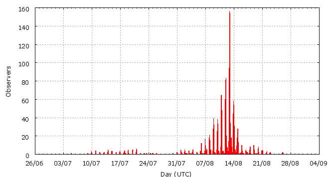

[ www.imo.net ]
This page shows automated results of the Perseids 2010, based on visual observations by volunteers astronomers collected through the report form of the International Meteor Organization (IMO). The information on this page is generated automatically; for scientific use please refer to manual analyses published in scientific journals (such as WGN). Send your feedback regarding this page to Geert Barentsen.
Page contents:
 11-13 August in detail (NEW)
11-13 August in detail (NEW)Page generated: 2010 November 11 at 17:49 UTC.
The graph below shows the ZHR (Zenithal Hourly Rate), which is the number of meteors an observer would see under a very dark sky with the radiant of the shower in zenith.
ZHRmax = 91 based on 41761 Perseids reported in 5946 intervals, assuming population index r = 2.0

| Time (UTC) | Solarlon | nINT | nPER | ZHR | Particle density | |
|---|---|---|---|---|---|---|
| 2010-07-04 22:39 | 102.690 | 1 | 1 | 7 | ±5 | 7 / 109·km3 |
| 2010-07-10 09:22 | 107.884 | 13 | 34 | 9 | ±2 | 9 / 109·km3 |
| 2010-07-11 23:05 | 109.384 | 12 | 23 | 5 | ±1 | 5 / 109·km3 |
| 2010-07-14 08:14 | 111.656 | 23 | 37 | 4 | ±1 | 4 / 109·km3 |
| 2010-07-16 23:39 | 114.177 | 15 | 18 | 4 | ±1 | 4 / 109·km3 |
| 2010-07-18 17:59 | 115.859 | 23 | 30 | 3 | ±1 | 3 / 109·km3 |
| 2010-07-20 15:17 | 117.661 | 20 | 34 | 4 | ±1 | 4 / 109·km3 |
| 2010-07-22 18:32 | 119.699 | 3 | 10 | 9 | ±3 | 9 / 109·km3 |
| 2010-07-25 02:16 | 121.916 | 10 | 8 | 6 | ±2 | 6 / 109·km3 |
| 2010-07-31 05:10 | 127.764 | 11 | 37 | 12 | ±2 | 11 / 109·km3 |
| 2010-08-02 00:06 | 129.475 | 24 | 105 | 14 | ±1 | 13 / 109·km3 |
| 2010-08-04 01:29 | 131.444 | 22 | 45 | 12 | ±2 | 11 / 109·km3 |
| 2010-08-06 09:22 | 133.675 | 84 | 353 | 17 | ±1 | 16 / 109·km3 |
| 2010-08-07 12:05 | 134.742 | 85 | 358 | 18 | ±1 | 17 / 109·km3 |
| 2010-08-08 00:41 | 135.245 | 68 | 547 | 21 | ±1 | 20 / 109·km3 |
| 2010-08-08 15:11 | 135.824 | 107 | 355 | 18 | ±1 | 17 / 109·km3 |
| 2010-08-08 23:50 | 136.170 | 147 | 798 | 22 | ±1 | 21 / 109·km3 |
| 2010-08-09 06:02 | 136.418 | 58 | 356 | 18 | ±1 | 17 / 109·km3 |
| 2010-08-09 22:17 | 137.067 | 79 | 605 | 22 | ±1 | 21 / 109·km3 |
| 2010-08-10 00:52 | 137.170 | 102 | 860 | 21 | ±1 | 20 / 109·km3 |
| 2010-08-10 15:10 | 137.743 | 54 | 350 | 22 | ±1 | 21 / 109·km3 |
| 2010-08-10 22:04 | 138.018 | 199 | 1392 | 24 | ±1 | 23 / 109·km3 |
| 2010-08-11 00:34 | 138.118 | 144 | 1317 | 26 | ±1 | 25 / 109·km3 |
| 2010-08-11 15:07 | 138.700 | 88 | 355 | 32 | ±2 | 30 / 109·km3 |
| 2010-08-11 21:52 | 138.970 | 351 | 2020 | 32 | ±1 | 30 / 109·km3 |
| 2010-08-12 00:33 | 139.077 | 411 | 2989 | 35 | ±1 | 33 / 109·km3 |
| 2010-08-12 04:39 | 139.241 | 52 | 353 | 53 | ±3 | 50 / 109·km3 |
| 2010-08-12 08:20 | 139.389 | 63 | 355 | 42 | ±2 | 40 / 109·km3 |
| 2010-08-12 15:04 | 139.658 | 45 | 361 | 91 | ±5 | 86 / 109·km3 |
| 2010-08-12 19:34 | 139.838 | 241 | 1503 | 86 | ±2 | 81 / 109·km3 |
| 2010-08-12 22:11 | 139.943 | 1129 | 8619 | 75 | ±1 | 71 / 109·km3 |
| 2010-08-13 00:35 | 140.039 | 844 | 7579 | 75 | ±1 | 71 / 109·km3 |
| 2010-08-13 03:34 | 140.158 | 64 | 519 | 75 | ±3 | 71 / 109·km3 |
| 2010-08-13 07:18 | 140.307 | 149 | 1141 | 79 | ±2 | 75 / 109·km3 |
| 2010-08-13 09:55 | 140.412 | 89 | 838 | 77 | ±3 | 73 / 109·km3 |
| 2010-08-13 17:00 | 140.696 | 46 | 351 | 67 | ±4 | 63 / 109·km3 |
| 2010-08-13 21:49 | 140.888 | 277 | 2251 | 51 | ±1 | 48 / 109·km3 |
| 2010-08-14 00:28 | 140.994 | 247 | 2093 | 44 | ±1 | 42 / 109·km3 |
| 2010-08-14 04:52 | 141.170 | 38 | 350 | 38 | ±2 | 36 / 109·km3 |
| 2010-08-14 16:51 | 141.650 | 108 | 351 | 31 | ±2 | 29 / 109·km3 |
| 2010-08-14 21:38 | 141.842 | 86 | 489 | 22 | ±1 | 21 / 109·km3 |
| 2010-08-15 00:14 | 141.946 | 67 | 540 | 23 | ±1 | 22 / 109·km3 |
| 2010-08-15 21:55 | 142.814 | 48 | 363 | 20 | ±1 | 19 / 109·km3 |
| 2010-08-17 09:45 | 144.250 | 97 | 309 | 9 | ±1 | 9 / 109·km3 |
| 2010-08-19 09:49 | 146.176 | 57 | 182 | 7 | ±1 | 7 / 109·km3 |
| 2010-08-21 03:59 | 147.866 | 27 | 127 | 10 | ±1 | 9 / 109·km3 |
| 2010-08-22 23:02 | 149.593 | 10 | 38 | 12 | ±2 | 11 / 109·km3 |
| 2010-08-25 23:13 | 152.492 | 8 | 12 | 5 | ±1 | 5 / 109·km3 |
The reported intervals are automatically added together into the bins shown above, based on the number of meteors and the distribution of the intervals. For each bin, the following parameters are computed:

| Time (UTC) | Solarlon | nINT | nPER | ZHR | Particle density | |
|---|---|---|---|---|---|---|
| 2010-08-11 00:11 | 138.103 | 23 | 201 | 26 | ±2 | 25 / 109·km3 |
| 2010-08-11 00:33 | 138.118 | 25 | 206 | 22 | ±2 | 21 / 109·km3 |
| 2010-08-11 00:53 | 138.131 | 23 | 222 | 29 | ±2 | 27 / 109·km3 |
| 2010-08-11 01:17 | 138.147 | 23 | 201 | 27 | ±2 | 26 / 109·km3 |
| 2010-08-11 01:53 | 138.171 | 13 | 121 | 25 | ±2 | 24 / 109·km3 |
| 2010-08-11 03:59 | 138.255 | 2 | 16 | 39 | ±9 | 37 / 109·km3 |
| 2010-08-11 05:16 | 138.306 | 3 | 27 | 25 | ±5 | 24 / 109·km3 |
| 2010-08-11 06:48 | 138.367 | 5 | 48 | 39 | ±6 | 37 / 109·km3 |
| 2010-08-11 08:01 | 138.416 | 8 | 49 | 25 | ±4 | 24 / 109·km3 |
| 2010-08-11 09:05 | 138.459 | 5 | 15 | 17 | ±4 | 16 / 109·km3 |
| 2010-08-11 09:58 | 138.494 | 7 | 18 | 26 | ±6 | 25 / 109·km3 |
| 2010-08-11 10:55 | 138.532 | 2 | 4 | 25 | ±11 | 24 / 109·km3 |
| 2010-08-11 15:31 | 138.716 | 2 | 14 | 60 | ±15 | 57 / 109·km3 |
| 2010-08-11 16:32 | 138.756 | 2 | 15 | 53 | ±13 | 50 / 109·km3 |
| 2010-08-11 18:30 | 138.836 | 8 | 6 | 40 | ±15 | 38 / 109·km3 |
| 2010-08-11 19:56 | 138.892 | 30 | 107 | 33 | ±3 | 31 / 109·km3 |
| 2010-08-11 20:29 | 138.915 | 40 | 201 | 33 | ±2 | 31 / 109·km3 |
| 2010-08-11 20:59 | 138.935 | 43 | 207 | 29 | ±2 | 27 / 109·km3 |
| 2010-08-11 21:22 | 138.950 | 41 | 217 | 29 | ±2 | 27 / 109·km3 |
| 2010-08-11 21:39 | 138.961 | 42 | 227 | 32 | ±2 | 30 / 109·km3 |
| 2010-08-11 22:02 | 138.977 | 30 | 218 | 34 | ±2 | 32 / 109·km3 |
| 2010-08-11 22:23 | 138.991 | 57 | 327 | 30 | ±2 | 28 / 109·km3 |
| 2010-08-11 22:43 | 139.004 | 45 | 317 | 36 | ±2 | 34 / 109·km3 |
| 2010-08-11 23:04 | 139.018 | 47 | 299 | 33 | ±2 | 31 / 109·km3 |
| 2010-08-11 23:24 | 139.032 | 53 | 340 | 32 | ±2 | 30 / 109·km3 |
| 2010-08-11 23:43 | 139.044 | 48 | 323 | 34 | ±2 | 32 / 109·km3 |
| 2010-08-12 00:05 | 139.059 | 51 | 383 | 36 | ±2 | 34 / 109·km3 |
| 2010-08-12 00:24 | 139.071 | 59 | 374 | 29 | ±1 | 27 / 109·km3 |
| 2010-08-12 00:43 | 139.084 | 48 | 373 | 34 | ±2 | 32 / 109·km3 |
| 2010-08-12 01:05 | 139.099 | 45 | 388 | 39 | ±2 | 37 / 109·km3 |
| 2010-08-12 01:23 | 139.111 | 39 | 300 | 35 | ±2 | 33 / 109·km3 |
| 2010-08-12 01:44 | 139.124 | 43 | 303 | 35 | ±2 | 33 / 109·km3 |
| 2010-08-12 02:09 | 139.141 | 23 | 201 | 46 | ±3 | 43 / 109·km3 |
| 2010-08-12 02:44 | 139.165 | 17 | 204 | 57 | ±4 | 54 / 109·km3 |
| 2010-08-12 05:41 | 139.283 | 10 | 43 | 57 | ±9 | 54 / 109·km3 |
| 2010-08-12 06:37 | 139.320 | 22 | 80 | 49 | ±5 | 46 / 109·km3 |
| 2010-08-12 07:37 | 139.360 | 25 | 100 | 41 | ±4 | 39 / 109·km3 |
| 2010-08-12 08:37 | 139.400 | 24 | 109 | 37 | ±4 | 35 / 109·km3 |
| 2010-08-12 09:36 | 139.439 | 10 | 118 | 48 | ±4 | 45 / 109·km3 |
| 2010-08-12 10:40 | 139.482 | 11 | 111 | 51 | ±5 | 48 / 109·km3 |
| 2010-08-12 11:38 | 139.521 | 3 | 12 | 55 | ±15 | 52 / 109·km3 |
| 2010-08-12 15:09 | 139.661 | 1 | 0 | 37 | ±37 | 35 / 109·km3 |
| 2010-08-12 16:01 | 139.696 | 6 | 38 | 79 | ±13 | 75 / 109·km3 |
| 2010-08-12 17:19 | 139.748 | 17 | 145 | 129 | ±11 | 122 / 109·km3 |
| 2010-08-12 18:06 | 139.779 | 26 | 200 | 90 | ±6 | 85 / 109·km3 |
| 2010-08-12 19:09 | 139.821 | 36 | 207 | 89 | ±6 | 84 / 109·km3 |
| 2010-08-12 19:38 | 139.841 | 32 | 203 | 96 | ±7 | 91 / 109·km3 |
| 2010-08-12 19:58 | 139.854 | 59 | 319 | 75 | ±4 | 71 / 109·km3 |
| 2010-08-12 20:19 | 139.868 | 76 | 485 | 75 | ±3 | 71 / 109·km3 |
| 2010-08-12 20:38 | 139.881 | 76 | 414 | 60 | ±3 | 57 / 109·km3 |
| 2010-08-12 20:59 | 139.895 | 97 | 709 | 73 | ±3 | 69 / 109·km3 |
| 2010-08-12 21:20 | 139.908 | 92 | 717 | 74 | ±3 | 70 / 109·km3 |
| 2010-08-12 21:39 | 139.921 | 101 | 840 | 83 | ±3 | 78 / 109·km3 |
| 2010-08-12 22:00 | 139.935 | 129 | 988 | 76 | ±2 | 72 / 109·km3 |
| 2010-08-12 22:20 | 139.949 | 141 | 1058 | 74 | ±2 | 70 / 109·km3 |
| 2010-08-12 22:38 | 139.961 | 140 | 980 | 65 | ±2 | 61 / 109·km3 |
| 2010-08-12 22:59 | 139.975 | 182 | 1597 | 86 | ±2 | 81 / 109·km3 |
| 2010-08-12 23:19 | 139.988 | 153 | 1228 | 74 | ±2 | 70 / 109·km3 |
| 2010-08-12 23:39 | 140.001 | 163 | 1487 | 83 | ±2 | 78 / 109·km3 |
| 2010-08-12 23:59 | 140.015 | 149 | 1364 | 81 | ±2 | 77 / 109·km3 |
| 2010-08-13 00:19 | 140.028 | 116 | 1086 | 76 | ±2 | 72 / 109·km3 |
| 2010-08-13 00:39 | 140.041 | 90 | 748 | 69 | ±3 | 65 / 109·km3 |
| 2010-08-13 01:00 | 140.055 | 102 | 863 | 65 | ±2 | 61 / 109·km3 |
| 2010-08-13 01:19 | 140.068 | 65 | 637 | 77 | ±3 | 73 / 109·km3 |
| 2010-08-13 01:37 | 140.080 | 50 | 515 | 78 | ±3 | 74 / 109·km3 |
| 2010-08-13 01:58 | 140.094 | 57 | 514 | 70 | ±3 | 66 / 109·km3 |
| 2010-08-13 02:19 | 140.108 | 27 | 229 | 70 | ±5 | 66 / 109·km3 |
| 2010-08-13 02:44 | 140.125 | 24 | 202 | 75 | ±5 | 71 / 109·km3 |
| 2010-08-13 03:31 | 140.156 | 22 | 161 | 67 | ±5 | 63 / 109·km3 |
| 2010-08-13 04:35 | 140.198 | 14 | 116 | 87 | ±8 | 82 / 109·km3 |
| 2010-08-13 05:46 | 140.246 | 21 | 214 | 87 | ±6 | 82 / 109·km3 |
| 2010-08-13 06:35 | 140.279 | 28 | 203 | 66 | ±5 | 62 / 109·km3 |
| 2010-08-13 07:05 | 140.299 | 25 | 202 | 88 | ±6 | 83 / 109·km3 |
| 2010-08-13 07:35 | 140.319 | 36 | 205 | 75 | ±5 | 71 / 109·km3 |
| 2010-08-13 08:07 | 140.340 | 30 | 227 | 89 | ±6 | 84 / 109·km3 |
| 2010-08-13 08:33 | 140.357 | 27 | 205 | 78 | ±5 | 74 / 109·km3 |
| 2010-08-13 09:07 | 140.380 | 24 | 213 | 66 | ±5 | 62 / 109·km3 |
| 2010-08-13 10:01 | 140.416 | 19 | 209 | 69 | ±5 | 65 / 109·km3 |
| 2010-08-13 10:56 | 140.453 | 21 | 202 | 91 | ±6 | 86 / 109·km3 |
| 2010-08-13 11:32 | 140.477 | 18 | 201 | 112 | ±8 | 106 / 109·km3 |
| 2010-08-13 11:57 | 140.493 | 3 | 27 | 80 | ±15 | 76 / 109·km3 |
| 2010-08-13 13:57 | 140.574 | 2 | 6 | 30 | ±11 | 28 / 109·km3 |
| 2010-08-13 15:59 | 140.655 | 4 | 48 | 57 | ±8 | 54 / 109·km3 |
| 2010-08-13 19:10 | 140.782 | 2 | 6 | 64 | ±24 | 60 / 109·km3 |
| 2010-08-13 19:57 | 140.814 | 26 | 207 | 66 | ±5 | 62 / 109·km3 |
| 2010-08-13 20:27 | 140.833 | 25 | 202 | 57 | ±4 | 54 / 109·km3 |
| 2010-08-13 20:47 | 140.847 | 29 | 202 | 56 | ±4 | 53 / 109·km3 |
| 2010-08-13 21:07 | 140.860 | 30 | 287 | 52 | ±3 | 49 / 109·km3 |
| 2010-08-13 21:26 | 140.873 | 31 | 204 | 49 | ±3 | 46 / 109·km3 |
| 2010-08-13 21:46 | 140.886 | 30 | 292 | 49 | ±3 | 46 / 109·km3 |
| 2010-08-13 22:05 | 140.899 | 32 | 265 | 48 | ±3 | 45 / 109·km3 |
| 2010-08-13 22:28 | 140.914 | 31 | 270 | 50 | ±3 | 47 / 109·km3 |
| 2010-08-13 22:49 | 140.929 | 41 | 328 | 51 | ±3 | 48 / 109·km3 |
| 2010-08-13 23:09 | 140.942 | 40 | 285 | 47 | ±3 | 44 / 109·km3 |
| 2010-08-13 23:23 | 140.951 | 22 | 147 | 41 | ±3 | 39 / 109·km3 |
Data has been received from 305 observers in 42 countries. Thank you for your efforts!
Note: click on the map for an interactive version.

| Observer | Country | Teff | nPER |
|---|---|---|---|
| Ioan Adam | Romania | 2.16h | 13 |
| Tomasz Adam | Poland | 5.62h | 270 |
| Salvador Aguirre | Mexico | 24.37h | 534 |
| Mina Alizadeh | Iran | 1.92h | 52 |
| Sergey Altobaev | Russia | 0.85h | 16 |
| Vladimir Anassiev | Russia | 1.00h | 88 |
| Alexandr Angelsky | Ukraine | 1.53h | 29 |
| Cristian-paul Angheluta | Romania | 2.45h | 36 |
| Rainer Arlt | Germany | 6.43h | 89 |
| Elena Babina | Ukraine | 6.73h | 140 |
| Julia Babina | Ukraine | 16.53h | 249 |
| Pierre Bader | Germany | 20.55h | 161 |
| János Bakos | Hungary | 2.69h | 54 |
| Peter Bakalik | Slovakia | 1.79h | 34 |
| Pavel Balanuca | Russia | 1.25h | 8 |
| Ricardas Balciunas | Lithuania | 5.16h | 82 |
| Geert Barentsen | Belgium | 2.45h | 101 |
| Rafael Barrios | Venezuela | 0.92h | 2 |
| Manca Behric | Slovenia | 15.26h | 305 |
| Zsombor Békési | Hungary | 2.64h | 33 |
| Zora Beljic | Serbia | 2.00h | 25 |
| Orlando Benitez Sanchez | Spain | 7.55h | 92 |
| Felix Bettonvil | Netherlands | 6.60h | 214 |
| Jean-marie Biets | Belgium | 7.84h | 98 |
| Anna Borys | Poland | 2.90h | 38 |
| Spiros Bouzis | Greece | 4.04h | 45 |
| Frederick Bove | Belgium | 1.86h | 22 |
| Emil Brezina | Czech Republic | 7.84h | 172 |
| Ivan Bryukhanov | Belarus | 3.79h | 10 |
| Lubomir St. Bubenik | Slovakia | 1.53h | 26 |
| Lubomir Ml. Bubenik | Slovakia | 1.53h | 57 |
| Martin Bubenik | Slovakia | 1.53h | 37 |
| Andreas Buchmann | Switzerland | 12.77h | 281 |
| Gennadij Bugarevych | Ukraine | 3.30h | 80 |
| Lukas Bulko | Slovakia | 1.53h | 54 |
| Alexandr Burday | Ukraine | 0.89h | 14 |
| Vasko Cacanoski | Macedonia | 2.15h | 114 |
| Yi Cao | China | 1.17h | 26 |
| Miguel Castillo | Venezuela | 2.85h | 57 |
| Jakub Cerny | Czech Republic | 18.47h | 560 |
| Igor Chalenko | Ukraine | 1.76h | 24 |
| Simiao Cheng | China | 6.26h | 64 |
| Marcin Chwala | Poland | 24.08h | 470 |
| Andrej Ciganj | Croatia | 4.63h | 99 |
| Matej Ciganj | Croatia | 4.87h | 103 |
| Primoz Cigler | Slovenia | 7.99h | 190 |
| Ionut Costache | Romania | 4.58h | 122 |
| Lucian Cosovanu | Romania | 14.02h | 578 |
| Tibor Csorgei | Slovakia | 2.92h | 85 |
| Anderson Dantas | Brazil | 4.68h | 139 |
| Biljana Davidovic | Serbia | 3.50h | 72 |
| Mark Davis | United States | 3.63h | 50 |
| Goedele Deconinck | Belgium | 2.42h | 77 |
| Alexandra Deyneka | Ukraine | 1.92h | 29 |
| Valentin Diaz Parreno | Spain | 0.63h | 18 |
| Sietse Dijkstra | Netherlands | 19.34h | 348 |
| Karolina Dimitrova | Bulgaria | 3.56h | 6 |
| Todor Dimitrov | Bulgaria | 25.90h | 551 |
| Dariusz Dorosz | Poland | 8.00h | 178 |
| Jozef Drga | Slovakia | 1.01h | 21 |
| Audrius Dubietis | Lithuania | 6.75h | 235 |
| Sergey Dobrowsky | Belarus | 1.47h | 15 |
| Garry Dymond | Canada | 1.58h | 18 |
| Anna Dzikowicz | Poland | 2.95h | 9 |
| Urszula Dzikowicz | Poland | 2.95h | 13 |
| Shlomi Eini | Israel | 12.72h | 243 |
| Maxim Ereshko | Russia | 2.16h | 66 |
| Elena Evdokimova | Russia | 9.2h | 62 |
| Svetlana Evdokimova | Russia | 9.8h | 60 |
| Qi Fan | China | 0.84h | 22 |
| Mihael Farkas | Serbia | 3.35h | 101 |
| Balázs Fodor | Hungary | 2.69h | 40 |
| Stela Frencheva | Bulgaria | 3.51h | 80 |
| Adam Gaca | Poland | 4.14h | 104 |
| Galin Genchev | Bulgaria | 3.61h | 114 |
| Christoph Gerber | Germany | 31.14h | 103 |
| Ivanka Getsova | Bulgaria | 7.41h | 56 |
| Wei Ge | China | 2.00h | 19 |
| Andraz Gnidovec | Slovenia | 6.36h | 117 |
| William Godley | United States | 11.25h | 97 |
| Guadalupe Gonzalez | Venezuela | 3.01h | 56 |
| Michal Goraus | Poland | 12.00h | 214 |
| Sylvie Gorkova | Czech Republic | 25.31h | 279 |
| Mitja Govedic | Slovenia | 15.76h | 375 |
| Kathryn Gray | Canada | 0.50h | 14 |
| Matej Granula | Slovenia | 1.34h | 7 |
| Paul Gray | Canada | 0.50h | 15 |
| Aleksey Grigorchuk | Russia | 6.64h | 52 |
| Jesus Guerrero | Venezuela | 1.98h | 11 |
| Piotr Guzik | Poland | 3.53h | 128 |
| Pavol Habuda | Slovakia | 11.22h | 132 |
| Sarry Habiby | United States | 0.15h | 1 |
| Bill Haddon | United States | 2.25h | 19 |
| Barbara Handzlik | Poland | 20.05h | 279 |
| Roberto Haver | Italy | 2.52h | 71 |
| Vilem Heblik | Czech Republic | 24.24h | 554 |
| Carl Hergenrother | United States | 5.11h | 97 |
| Niall J Hewitt | United Kingdom | 0.08h | 7 |
| Ken Hodonsky | United States | 4.83h | 90 |
| James Holaday | United States | 2.00h | 62 |
| Kamil Hornoch | Czech Republic | 12.51h | 295 |
| Petr Horalek | Czech Republic | 3.20h | 68 |
| Shan Huang | China | 0.90h | 25 |
| Michiel Hubeau | Belgium | 7.51h | 211 |
| Spartak Ivanov | Russia | 2.63h | 37 |
| Lars Jacobs | Belgium | 1.58h | 42 |
| Milosz Jakubek | Poland | 1.79h | 42 |
| Miroslav Jedlicka | Czech Republic | 2.49h | 96 |
| Jeremy Jefferis | United States | 5.81h | 31 |
| Carl Johannink | Netherlands | 18.77h | 473 |
| Jane Houston Jones | United States | 3.77h | 124 |
| Andrea Josipovic | Serbia | 1.33h | 14 |
| Javor Kac | Slovenia | 55.14h | 1119 |
| Jakub Kacprzak | Slovenia | 5.18h | 31 |
| Desislava Kalaidjieva | Bulgaria | 1.24h | 28 |
| Maihtili Kalamkar | India | 12.00h | 127 |
| Dmitry Kirienko | Russia | 0.98h | 21 |
| Gyula Kiss | Hungary | 7.75h | 408 |
| Zdenek Komarek | Slovakia | 11.72h | 152 |
| Stanislav Korotkiy | Russia | 11.22h | 384 |
| Petar Kostic | Serbia | 6.96h | 202 |
| Peter Kosec | Czech Republic | 3.10h | 30 |
| Jakub Koukal | Czech Republic | 84.93h | 1075 |
| Roman Kovalyk | Italy | 24.93h | 55 |
| Peter Kozich | unknown | 1.05h | 36 |
| Richard Kramer | United States | 1.81h | 55 |
| Rugile Kraulaidyte | Lithuania | 3.50h | 162 |
| Martin Kuttner | Slovakia | 1.53h | 56 |
| Maciej Kwinta | Poland | 3.50h | 52 |
| Marina Kychyzhyyeva | Ukraine | 17.36h | 260 |
| Delyan Lafchiev | Bulgaria | 6.15h | 185 |
| Katarina Lechmanova | Slovakia | 7.72h | 110 |
| Greet Lembregts | Belgium | 1.37h | 8 |
| Greet Lembregts | Belgium | 3.14h | 41 |
| Jan Lembregts | Belgium | 1.74h | 22 |
| Mariusz Lemiecha | Poland | 7.08h | 147 |
| Florin Leu | Romania | 8.69h | 108 |
| Peter Van Leuteren | Netherlands | 26.80h | 566 |
| Anna S. Levina | Israel | 22.42h | 384 |
| Mike Linnolt | United States | 1.38h | 32 |
| Ruiwen Li | China | 2.15h | 13 |
| Yanzhe Liu | United States | 3.17h | 177 |
| Wanyu Li | China | 1.82h | 59 |
| Xin Li | China | 3.32h | 45 |
| Yuanjing Li | China | 0.85h | 35 |
| Zefeng Li | China | 0.99h | 1 |
| Vladimir Lobotka | Slovakia | 1.33h | 39 |
| Tomasz Lojek | Poland | 41.14h | 532 |
| Ilia Los' | Russia | 2.00h | 12 |
| Jer Nan Lou | Taiwan | 0.22h | 4 |
| Avital Loven | Israel | 3.08h | 36 |
| Robert Lunsford | United States | 6.23h | 209 |
| Hartwig Luthen | Germany | 1.02h | 10 |
| Jose Luis Maestre Garcia | Spain | 1.83h | 16 |
| Boris Majic | Serbia | 4.12h | 185 |
| Veikko Makela | Finland | 3.41h | 47 |
| Qiang Ma | China | 1.25h | 25 |
| Grigoris Maravelias | Greece | 10.87h | 264 |
| Ivana Marjanovic | Serbia | 5.40h | 121 |
| Jose Afonso Dos Reis Martins | Portugal | 1.80h | 26 |
| Pierre Martin | Canada | 31.11h | 727 |
| Tony Markham | United Kingdom | 3.5h | 17 |
| Mikhail Maslov | Russia | 4.00h | 11 |
| Martin Masek | Czech Republic | 0.42h | 0 |
| Aleksandar Matic | Serbia | 20.62h | 629 |
| Batlomiej Matuszkiewicz | Poland | 7.23h | 119 |
| Marcin Matusinski | Poland | 3.02h | 99 |
| Bruce Mccurdy | Canada | 5.00h | 128 |
| Hilmarys Mejias | Venezuela | 1.32h | 22 |
| Vasilis Metallinos | Greece | 4.56h | 88 |
| Yanina Metodieva | Bulgaria | 5.78h | 323 |
| Ivo Micek | Czech Republic | 5.27h | 123 |
| Jozef Michalik | Slovakia | 0.60h | 11 |
| Marco Micheli | Italy | 1.23h | 4 |
| Mihail Mihov | Bulgaria | 3.06h | 63 |
| Barbara Milovanovic | Serbia | 3.02h | 111 |
| Mariya Milcova | Bulgaria | 2.95h | 16 |
| Vladislava Milic | Serbia | 3.17h | 92 |
| Artem Mirgorod | Ukraine | 2.28h | 10 |
| Jakub Mirocha | Poland | 27.05h | 264 |
| Koen Miskotte | Netherlands | 28.66h | 651 |
| Sirko Molau | Germany | 3.25h | 63 |
| József Morvai | Hungary | 2.64h | 11 |
| Konstantin Morozov | Belarus | 33.8h | 542 |
| Jadwiga Moskal | Poland | 4.50h | 82 |
| Umberto Mule Stagno | Malta | 3.83h | 194 |
| Maciej Myszkiewicz | Poland | 30.79h | 530 |
| Aleksandar Nachev | Bulgaria | 22.50h | 191 |
| Adrienn Nagy | Hungary | 2.69h | 5 |
| Andreea Nanciu | Romania | 14.74h | 245 |
| Martin Nedved | Czech Republic | 4.85h | 52 |
| Basil Nikolau | United States | 1.42h | 24 |
| Filip Nikodem | Poland | 0.50h | 43 |
| Vitalii Nikolaev | Russia | 2.19h | 60 |
| Mohammad Nilforoushan | Iran | 2.00h | 117 |
| Markku Nissinen | Finland | 1.06h | 9 |
| Michael Nolle | Malta | 3.75h | 118 |
| Artyom Novichonok | Russia | 3.13h | 24 |
| Nikola Novkovic | Serbia | 1.50h | 19 |
| Francisco Ocana Gonzalez | Spain | 2.82h | 121 |
| Arkadiusz Olech | Poland | 3.32h | 75 |
| Nikita Omelchuk | Ukraine | 0.94h | 18 |
| Anaclara Padilla | Spain | 0.77h | 12 |
| Anna Palasz | Poland | 8.07h | 93 |
| Anna Pavlova | Ukraine | 11.67h | 108 |
| Dusan Pavlovic | Serbia | 10.44h | 298 |
| Lovro Pavletic | Croatia | 1.41h | 31 |
| Pavlina Pavlova | Bulgaria | 10.29h | 195 |
| Tamara Pavlovic | Yugoslavia | 4.54h | 101 |
| Dominika Peczek | Poland | 2.95h | 14 |
| Cedric Peinado | France | 2.53h | 195 |
| Katerina Piekarzova | Czech Republic | 6.69h | 182 |
| Krzysztof Pieszczoch | Poland | 35.29h | 436 |
| Aleksandr Pobiakha | Belarus | 10.81h | 231 |
| Konstantin Polyakov | Russia | 6.91h | 16 |
| Krzysztof Polakowski | Poland | 3.16h | 67 |
| Martin Polak | Slovakia | 1.25h | 13 |
| Radoslaw Poleski | Poland | 0.59h | 13 |
| Robert Pomohaci | Romania | 2.65h | 86 |
| Sasha Prokofyev | Russia | 10.57h | 139 |
| Constantin Psenitchi | Romania | 14.03h | 578 |
| Xi Qian | China | 1.91h | 39 |
| Hermitanio Quinto | Philippines | 0.53h | 2 |
| Uros Rakic | Serbia | 1.58h | 25 |
| Ella Ratz | Israel | 4.40h | 49 |
| Mario Raymundo | Philippines | 0.47h | 2 |
| Jurgen Rendtel | Germany | 25.24h | 195 |
| Anna Rieth | Hungary | 2.69h | 22 |
| Dasha Rodina | Ukraine | 7.5h | 25 |
| Agnieszka Ruminska | Poland | 12.28h | 232 |
| Toru Sagayama | United States | 2.07h | 76 |
| Jenia Sanina | Ukraine | 9.58h | 50 |
| Branislav Savic | Serbia | 10.1h | 185 |
| Branislav Savic | Serbia | 10.16h | 301 |
| Teodora Savic Popovic | Serbia | 8.3h | 234 |
| Christian Schmiel | Germany | 4.54h | 65 |
| Sergei Schmalz | Germany | 18.50h | 84 |
| Stanislav Scholtz | Slovakia | 12.70h | 119 |
| Olexandr Sedun | Ukraine | 2.18h | 54 |
| Ivan M. Sergey | Belarus | 15.46h | 136 |
| Wei Shi | China | 3.77h | 165 |
| Srdjan Sibalic | Serbia | 1.85h | 19 |
| Magdalena Sieniawska | Poland | 34.44h | 533 |
| Costantino Sigismondi | Italy | 2.00h | 9 |
| Andrea Sipka | Serbia | 5.73h | 222 |
| Urmas Sisask | Estonia | 5.01h | 171 |
| Dariusz Sitek | Poland | 2.95h | 16 |
| Andrzej Skoczewski | Poland | 3.25h | 59 |
| Szymon Skorupinski | Poland | 2.31h | 56 |
| Alexander Smirnov | Russia | 0.99h | 15 |
| Natalia Smus | Poland | 5.90h | 32 |
| Tomislav Sori? | Croatia | 5.50h | 138 |
| Jiri Srba | Czech Republic | 3.77h | 109 |
| Filip Stanisavljevic | Serbia | 4.32h | 86 |
| Florin-alexandru Stancu | Romania | 9.14h | 174 |
| Sergey Stariy | Ukraine | 1.77h | 35 |
| Michal Stefancik | Slovakia | 9.59h | 122 |
| Toni Stipec | Croatia | 6.8h | 126 |
| Kristian Stojsic | Croatia | 6.57h | 166 |
| Nikola Stojanovic | Serbia | 19.76h | 374 |
| Olivera Stojanovic | Serbia | 16.38h | 374 |
| Tomasz Stolecki | Poland | 2.46h | 12 |
| Wesley Stone | United States | 6.82h | 448 |
| Ksenia Strumenshikova | Russia | 2.96h | 8 |
| Oana Suciu | Romania | 1.97h | 77 |
| Jury Suetin | Russia | 6.82h | 26 |
| Martina Supak | Croatia | 7.48h | 131 |
| Matej Sustr | Slovakia | 1.81h | 68 |
| Michal Sustr | Slovakia | 1.06h | 38 |
| Xiaotong Su | China | 2.17h | 84 |
| Patrik Svancara | Czech Republic | 3.26h | 47 |
| Pavel Svozil | Czech Republic | 7.42h | 179 |
| Richard Taibi | United States | 4.42h | 42 |
| Dana Camelia Talpeanu | Romania | 2.61h | 73 |
| Csilla Tepliczky | Hungary | 19.05h | 374 |
| Istvan Tepliczky | Hungary | 4.93h | 57 |
| Xin Tian | China | 0.48h | 9 |
| Vladimir Tkac | Slovakia | 8.88h | 224 |
| Lachezar Todorov | Bulgaria | 6.03h | 121 |
| Veljko Tomic | Croatia | 6.81h | 62 |
| Jhonny Torres | Venezuela | 1.72h | 16 |
| Rafael Ruben Torregrosa Soler | Spain | 1.93h | 14 |
| Vesa Tornqvist | Finland | 1.48h | 19 |
| Evgeny Trisko | Russia | 1.80h | 28 |
| Raul Cosmin Truta | Romania | 3.40h | 205 |
| Shigeo Uchiyama | Japan | 5.18h | 75 |
| Nejc Ucman | Slovenia | 7.55h | 119 |
| Hendrik Vandenbruaene | Belgium | 2.73h | 134 |
| Ini Vanwesenbeeck | Belgium | 0.68h | 12 |
| Michel Vandeputte | Belgium | 51.57h | 719 |
| Wienie Van Der Oord | Israel | 16.44h | 106 |
| Maria Vasquez | Venezuela | 1.72h | 13 |
| Valentin Velkov | Bulgaria | 20.88h | 523 |
| Jan Verbert | Belgium | 3.42h | 79 |
| Katarina Veselinovic | Serbia | 3.33h | 74 |
| Nevena Veselinovic | Serbia | 3.32h | 56 |
| Denis Vida | Croatia | 0.73h | 21 |
| Ivaylo Videv | Bulgaria | 1.16h | 24 |
| Myriam Vingerhoets | Belgium | 19.30h | 158 |
| Luis Vivas | Venezuela | 0.93h | 21 |
| Marina Vlajnic | Serbia | 16.9h | 375 |
| Vanja Vlajnic | Serbia | 15.73h | 557 |
| Ewa Wala | Poland | 14.65h | 199 |
| Yuda Wang | China | 1.10h | 5 |
| Zhaoxing Wang | China | 1.37h | 21 |
| William Watson | United States | 21.79h | 290 |
| Thomas Weiland | Austria | 42.26h | 882 |
| Xiaofan Wei | China | 4.4h | 45 |
| Oliver Wusk | Germany | 8.90h | 150 |
| Xijun Wu | China | 4.09h | 44 |
| Li Xue | China | 1.50h | 7 |
| George Xystouris | Cyprus | 1.22h | 26 |
| Jiaqing Yang | China | 3.52h | 128 |
| Oleg Yavorski | Russia | 4.32h | 129 |
| Ilkka Yrjola | Finland | 1.09h | 9 |
| Weizhou Zeng | China | 6.10h | 166 |
| Xiang Zhan | China | 1.00h | 15 |
| Kamil Zloczewski | Poland | 3.24h | 59 |
| Przemyslaw Zoladek | Poland | 8.95h | 125 |
| Konstantin Zor'kin | Russia | 2.02h | 73 |
| Dario Zubovic | Croatia | 5.11h | 37 |
Create your own analysis. The files below can be opened using Excel:
per2010_rate.csv (number of meteors per interval per observer)
per2010_magn.csv (number of meteors per magnitude bin per observer)
The information on this page may be distributed freely provided credit is given to the International Meteor Organization (IMO) and, when possible, to the individual observers. The computer facilities to generate this page are provided by the Urania Public Observatory in Belgium and Armagh Observatory in Northern Ireland.
References: